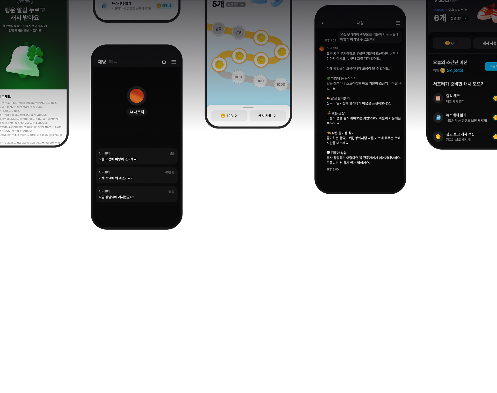
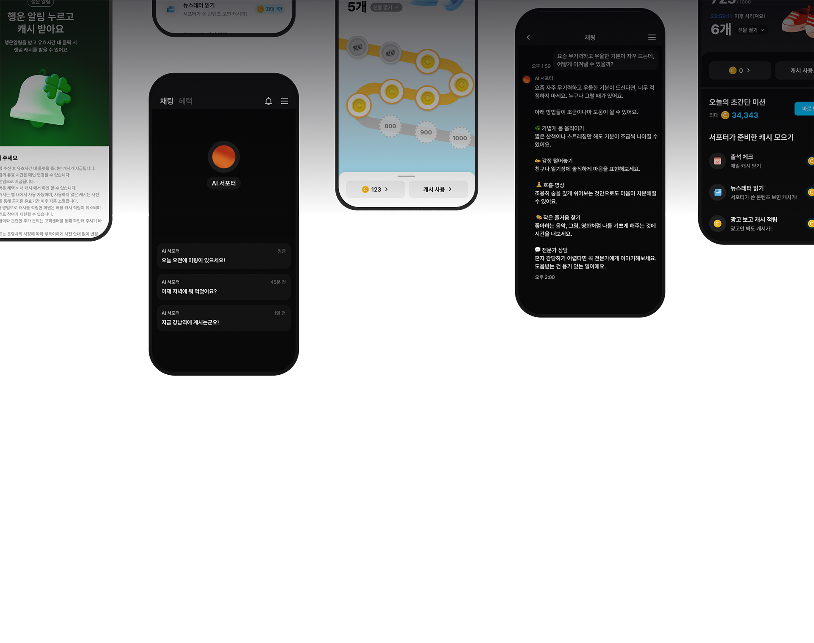

뤼튼 3.0은
뭐가
달라졌을까?
뤼튼 3.0은
뭐가 달라졌을까?
나만의 AI 서포터
새로워진 뤼튼에서
만나보세요
새로운 뤼튼
뤼튼의 모든
기능이
나를 위한 단 하나의
서포터로 통합됩니다
채팅
강력한
성능 업그레이드
목적 선택이나 고민 없이
최고의
한국어 성능을 만나보세요.
전문적인 업무
문서와 이미지를 분석하거나,
복잡한 업무 및
과제 요청도 전문적으로 수행해요.
자동 인터넷 검색
인터넷 검색이 필요할 때와
아닐 때를
자동으로 구분하여 최적의 답변을 제공해요.
AI 서포터
나를 위한 진화
뤼튼의 AI 서포터는 사용하면
할수록 더 정확하게
이해하고
나에게 맞춰 똑똑해져요.
이전보다
10배 향상된 기억력
오래전에 한 이야기도
기억하여 대화에 반영해요
나만을 위한
맞춤형 뉴스레터
나의 관심사와 흥미에 맞춘 최신
정보를 정리해서 보내줘요
AI가 먼저
다가오는 경험
유용한 정보나 소식을 놓치지 않도록
먼저 말을 걸어줘요.
여전히
강력한 보안
최고 수준의 보안과 암호화로
안전하게 대화할 수 있어요.
혜택
무료를 넘어 소득까지
가볍게 수행할
수 있는 앱테크
미션으로
소득을 만들어보세요.
*성냥이 뤼튼 캐시로 변경됩니다.
뤼튼을 쓰기만해도
주는 캐시
출석체크와 서포터가 보낸
뉴스레터를
읽기만 해도 매일 캐시를 받을 수 있어요.
가장 쉬운
앱테크 미션
천보기, 팔로우, 설문 등 타
서비스 대비
쉬운 미션으로 더 많은 캐시를 모을 수 있어요.
모은 캐시를 스토어에서
현금처럼 사용
모은 캐시는 상품권으로
교환하거나
물건을 직접 구매할 수 있어요.
도구
업무의 처음부터 끝까지
업무와 과제에 특화된
도구들은
변함없이 무제한 무료로 사용할 수 있어요.
AI 탐지 방어
AI가 감지하지 못하도록
자연스러운 말투 교정
블로그
고품질의 블로그 포스팅을
자동으로 완성
AI 완벽 요약
유튜브 영상, 웹사이트, 문서 등
긴 글을 완벽하게 요약
서포터와 함께 사용
결과물을 서포터와 함께
편집할 수 있어요
20개 이상의 다양한 도구
뤼튼에선 누구나 전문가로
 

더 강력해진 뤼튼, 이렇게 달라집니다
한 눈에
보는
새로운 뤼튼

강력한 성능 업그레이드

나를 위한 진화

무료를 넘어 소득까지

업무의 처음부터 끝까지
강력한 성능 업그레이드
나를 위한 진화
무료를 넘어 소득까지
업무의 처음부터 끝까지
완전히 새로워지는 뤼튼,
곧 만나요!
2025.4.28
나만의 AI 서포터가 무엇인가요?
기존의 대화 내용은 보존되나요?
무료 서비스는 유지되나요?
이전 버전의 뤼튼을 사용할 수는 없나요?
AI 성능에 변화가 있나요?
회원가입을 새로 해야하나요?
나만의 AI는 어디서 사용할 수 있나요?
AI 검색, AI 과제와 업무, AI 이미지는 어디서 사용할 수 있나요?
자동 완성은 어디서 사용할 수 있나요?
완벽 요약은 어디서 사용할 수 있나요?
탐지 방어는 어디서 사용할 수 있나요?
보유하던 성냥은 어떻게 되나요?
캐릭터 챗이 사라졌어요. 캐릭터 챗은 어디서 이용할 수 있나요?
개편으로 종료되는 서비스에는 무엇이 있나요?
Q&A에서 원하는 답변을 찾지 못했어요.